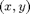

Contents
augment_unicycle.m
Summary: The function computes the  velocities of the contact point in both absolute and unicycle coordinates as well as the the unicycle coordinates of the contact point themselves.
function r = augment(s)
Input arguments:
% s state of the unicycle (including the torques). [1 x 18] % The state is assumed to be given as follows: % dx empty (to be filled by this function) % dy empty (to be filled by this function) % dxc empty (to be filled by this function) % dyc empty (to be filled by this function) % dtheta roll angular velocity % dphi yaw angular velocity % dpsiw wheel angular velocity % dpsif pitch angular velocity % dpsit turn table angular velocity % x x position % y y position % xc empty (to be filled by this function) % yc empty (to be filled by this function) % theta roll angle % phi yaw angle % psiw wheel angle % psif pitch angle % psit turn table angle % % *Output arguments:* % % r additional variables that are computed based on s: [1 x 6] % dx x velocity of contact point (global coordinates) % dy y velocity of contact point (global coordinates) % dxc x velocity of contact point (unicycle coordinates) % dyc y velocity of contact point (unicycle coordinates) % xc x position of contact point (unicycle coordinates) % yc y position of contact point (unicycle coordinates) % % % Copyright (C) 2008-2013 by % Marc Deisenroth, Andrew McHutchon, Joe Hall, and Carl Edward Rasmussen. % % Last modified: 2013-03-27 function r = augment_unicycle(s)
Code
rw = 0.225; % wheel radius in meters % x velocity of contact point (global coordinates) r(1) = rw*cos(s(15))*s(7); % y velocity of contact point (global coordinates) r(2) = rw*sin(s(15))*s(7); % (x,y) velocities of contact point (unicycle coordinates) A = -[cos(s(15)) sin(s(15)); -sin(s(15)) cos(s(15))]; dA = -s(6)*[-sin(s(15)) cos(s(15)); -cos(s(15)) -sin(s(15))]; r(3:4) = A*r(1:2)' + dA*s(10:11)'; % (x,y) coordinates of contact point (unicycle coordinates) r(5:6) = A*s(10:11)';